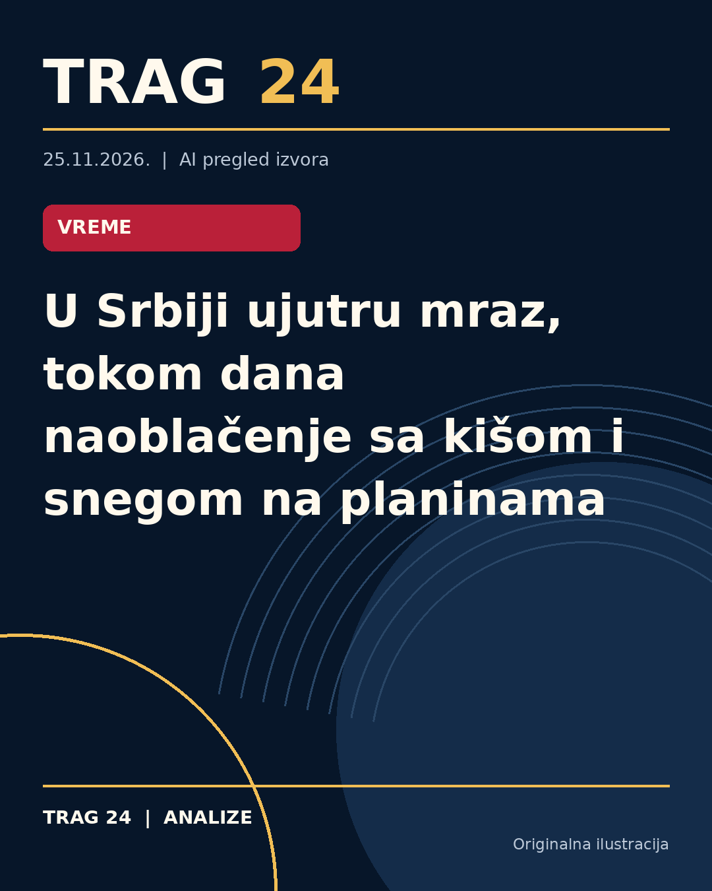

U Srbiji ujutru mraz, tokom dana naoblačenje sa kišom i snegom na planinama

ŠTA SE DOGODILO
Republički hidrometeorološki zavod Srbije saopštio je vremensku prognozu koja upozorava na hladno jutro sa mrazom, postepeno naoblačenje tokom dana, a potom i padavine uveče koje će biti praćene kišom i kratkotrajnim snežnim padavinama na visokim planinama jugozapadne i južne Srbije. Na planinama istočne Srbije i u Negotinskoj krajini kiša može poledeti pri tlu tokom noći.
HRONOLOGIJA
Jutarnji mraz očekuje se pre početka dnevnog naoblačenja. Kasno posle podne i uveče prognozirane su kiša i sneg na planinskim područjima. Uveče pojava lediće kiša na istoku Srbije i u Negotinskoj krajini. U narednim danima predviđa se uglavnom oblačno vreme sa povremenom kišom i jačim jugoistočnim vetrom, dok će krajem nedelje temperature opasti i sneg se proširiti na više delova zemlje.
ŠTA NAVODE IZVORI
Sva tri izvora – Danas, Nova.rs i Novosti – prenose isti meteorološki izveštaj Republičkog hidrometeorološkog zavoda. Prognoza navodi umereni do jak južni i jugoistočni vetar, minimalne temperature od minus sedam do nule stepeni i maksimalne dnevne temperature od četiri do devet stepeni Celzijusa. Novosti dodatno ističu RHMZ izdavanje upozorenja zbog mogućeg ledišta po tlu na istoku Srbije i u Negotinskoj krajini tokom noći.
ŠTA JE POTVRĐENO
Jedinstven je podatak da ujutru vlada mraz i hladno vreme. Tokom dana očekuje se postepeno naoblačenje koje će prouzrokovati kišu, dok će na najvišim planinama jugozapadne i južne Srbije biti i snega. Tokom večeri i noći vetar će pojačati u košavskom području. Povremene otežavajuće atmosferske pojave poput ledišta potvrđene su za istočne i istočno-severne delove Srbije. Temperature su precizno određene između minus sedam i devet stepeni.
ŠTA NIJE POTVRĐENO
Nema potvrđenih podataka o značajnim padavinama na nižim terenima osim kiše, ni detaljnijih vremenskih neprilika van navedenih planinskih i istočnih delova Srbije. Takođe, nema pojedinosti o dužem trajanju snežnih padavina na nižim nivoima ili prognozama za naredne nakon opisanog perioda. Nisu pružene informacije o mogućim posledicama zbog vremenskih uslova.
ŠTA OSTАJE OTVORENO: Ostaje nejasno koliko dugo će padavine trajati i koliko će sneg uticati na saobraćaj i dnevne aktivnosti. Nije precizirano da li će se sneg proširiti i na niže predele tokom narednih dana. Takođe, moguće promene u jačini vetra i rukovođenje saobraćajem ostaju za naredne prognoze Republičkog hidrometeorološkog zavoda.
Izvori
- https://www.danas.rs/vesti/drustvo/vreme-danas-ujutru-mraz-tokom-dana-oblacno/
- https://nova.rs/magazin/vremenska-prognoza/u-srbiji-ujutru-mraz-tokom-dana-oblacno-uvece-kisa-i-sneg-na-planinama/
- https://www.novosti.rs/planeta/svet/1674443/vremenska-prognoza-sutra-sreda-mraz-kisa-srbija-vreme-ujutru-prognoza
Ova analiza je pripremljena uz pomoć veštačke inteligencije na osnovu javno dostupnih izvora. Navodi izvora nisu nužno nezavisno potvrđeni.